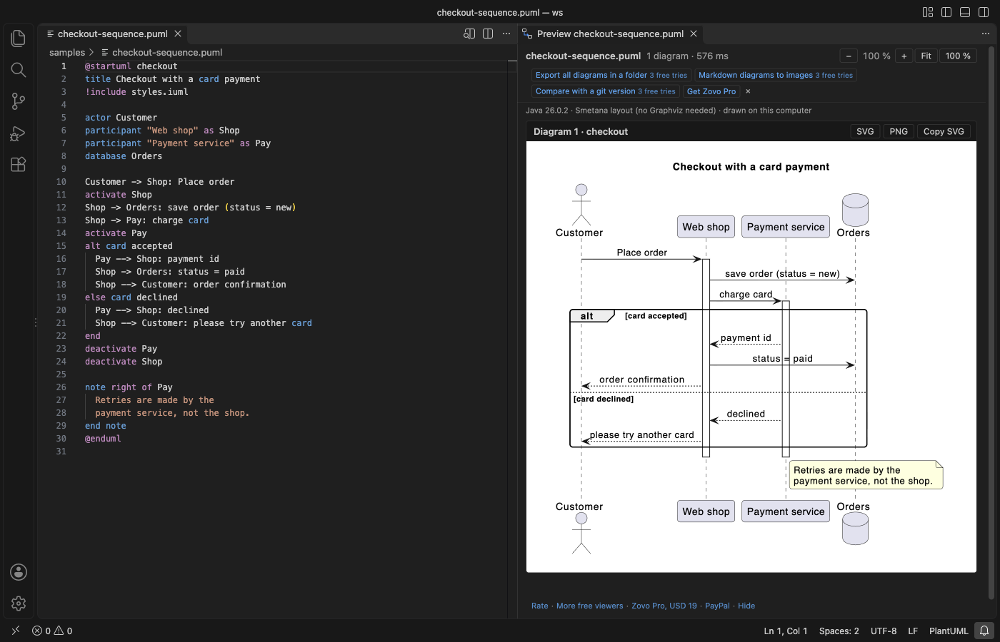

Visualizar um diagrama PlantUML no VS Code enquanto você digita
Instale a extensão grátis PlantUML Viewer & Preview, abra um arquivo .puml ou um arquivo Markdown com um bloco plantuml e clique no botão de preview. O diagrama é desenhado ao lado do seu código enquanto você digita, pelo jar do PlantUML que vem dentro da extensão e pelo seu próprio Java 11 ou mais recente, então nada é enviado para um servidor e o Graphviz não é necessário. O preview, o zoom, os links para os erros e salvar um diagrama como SVG ou PNG são grátis. O Zovo Pro (19 USD, pagos uma vez só) acrescenta três ferramentas, Export All Diagrams in a Folder, Markdown Diagrams to Images e Compare with a Git Version, e cada uma tem 3 usos grátis.
Grátis, licença MIT. ID da extensão zovo.zovo-plantuml-viewer, versão 0.1.0.
Este guia também está em English · Français · 한국어 · Polski · Русский · 简体中文 · Türkçe · Bahasa Indonesia · Tiếng Việt · हिन्दी · ไทย · Українська

Passo a passo no VS Code
- Instale o PlantUML Viewer & Preview pelo Marketplace, ou aperte Ctrl+P (Cmd+P no macOS) e rode
ext install zovo.zovo-plantuml-viewer. - Confira se o Java 11 ou mais recente está instalado. A extensão procura o Java na configuração
plantumlViewer.javaPath, depois emJAVA_HOME, depois ojavano PATH e por fim nas pastas de JDK de costume. Quando não encontra nenhum, o preview avisa e oferece "Set the Java path". O comando "PlantUML: Show Java and Layout Status" mostra o que foi encontrado. - Abra um arquivo
.puml,.plantuml,.iuml,.puou.wsd, ou um arquivo Markdown com um bloco```plantuml, e clique no botão de preview no canto superior direito do editor. Você também pode pressionar Alt+D em um arquivo PlantUML ou executar "PlantUML: Open Preview to the Side". - Digite. O preview é redesenhado um instante depois que você para de digitar (400 ms por padrão, configuração
plantumlViewer.renderDelay). Todos os diagramas do arquivo aparecem em um só preview, e o que está sob o cursor fica contornado. - Dê zoom com os botões, com Ctrl ou Cmd e a roda do mouse, ou com as teclas + e -. Clique em Fit para ajustar o diagrama à largura do painel e arraste um diagrama para se mover nele. Um diagrama com erro mostra a mensagem do PlantUML e um link "Go to line".
- Clique em SVG ou PNG acima de um diagrama para salvar só esse diagrama, ou em Copy SVG para copiá-lo.
O que é grátis e o que o Zovo Pro acrescenta
O preview ao vivo de arquivos .puml, .plantuml, .iuml, .pu e .wsd e de blocos plantuml no Markdown, o zoom e o arrastar, os erros com link para a linha, salvar um diagrama como SVG ou PNG, Copy SVG, as cores de sintaxe, os snippets (seq, classd, activity, mindmap, gantt e outros), o folding e os comentários são grátis. Os diagramas são desenhados no seu computador e nunca são enviados para um servidor.
Quando os diagramas de um projeto precisam ir para a documentação ou para slides, o Export All Diagrams in a Folder grava de uma vez cada diagrama de cada arquivo PlantUML de uma pasta e das subpastas em SVG, PNG ou PDF, ao lado de cada arquivo ou todos em uma única pasta. Os diagramas com erro são pulados e listados com arquivo, linha e mensagem, e os outros são gravados. Você não precisa abrir cada arquivo e salvar cada diagrama à mão.
Como usar Export All Diagrams in a Folder (Zovo Pro)
- Clique com o botão direito em uma pasta no Explorer e escolha "Zovo Pro: Export all diagrams in a folder", clique em "Export all diagrams in a folder" na linha Pro tools da barra de ferramentas do preview, ou execute "PlantUML: Export All Diagrams in a Folder (Pro)" na Command Palette e escolha a pasta.
- Escolha SVG, PNG ou PDF e depois "Next to each PlantUML file" ou "All in one folder...".
- No fim, uma mensagem diz quantos diagramas foram exportados. Clique em "Show errors" para ver a lista dos diagramas que tiveram erro, ou em "Reveal" para ver os arquivos.
- Um uso só conta quando pelo menos uma imagem foi gravada. Esc, Cancel ou uma pasta sem arquivos PlantUML não gastam nenhum.
Export All Diagrams in a Folder funciona 3 vezes no seu computador antes de pedir uma licença. Não há janela pop-up nem contagem regressiva.
O Zovo Pro custa 19 USD, pagos uma vez só. Não é assinatura, e a licença libera as ferramentas Pro em todas as extensões Zovo, não só no PlantUML Viewer & Preview. Depois do pagamento com cartão (Stripe), a chave de licença aparece na página seguinte. No VS Code, rode "Zovo Pro: Enter Zovo Pro license key" pela Command Palette e cole a chave. A chave é conferida no seu computador, sem acesso à rede. Pelo GitHub Sponsors, escolha o nível "$19 one time" e depois rode "Zovo Pro: I already paid: unlock with GitHub Sponsors".
Uma equipe de 5 pessoas paga 59 USD uma vez só (com cartão). Todas as regras e ferramentas Pro estão na página do Zovo Pro (em inglês).
Passo a passo no Cursor, Windsurf ou VSCodium
- Abra a visão Extensions com Ctrl+Shift+X (Cmd+Shift+X no macOS).
- Busque
zovo.zovo-plantuml-viewere clique em Install. Cursor, Windsurf e VSCodium instalam extensões do Open VSX, onde esta se chamazovo/zovo-plantuml-viewer. - Se o seu editor não tiver galeria, baixe o arquivo .vsix na página do Open VSX e rode "Extensions: Install from VSIX...".
- Depois disso, tudo funciona como no VS Code.
O que o PlantUML Viewer & Preview faz
- Diagramas de sequência, de classes, de atividades, de componentes, de estados e de casos de uso, mapas mentais, gráficos de Gantt e os outros blocos
@start...do PlantUML incluído (build MIT 1.2026.10). - Blocos
```plantuml,```pumle```umlno Markdown, com ou sem@startumldentro. O botão de preview aparece em um arquivo Markdown que tenha pelo menos um deles. !includede arquivos da pasta do diagrama, das pastas do workspace e deplantumlViewer.includePaths, e a biblioteca padrão, como!include <C4/C4_Container>, offline. Includes de C4, de ícones da AWS e de icon fonts escritos como endereçoshttps://raw.githubusercontent.com/...são lidos da cópia dentro do jar.- Diagramas de sequência, mapas mentais e gráficos de Gantt não precisam de motor de layout. Diagramas de classes, componentes, estados e casos de uso usam o Graphviz quando o
dotestá instalado (plantumlViewer.layoutemauto) e o motor Smetana embutido no PlantUML quando não está. - Os diagramas são mostrados como imagens, então links ou textos dentro de um diagrama não conseguem executar código no editor.
O que ele não faz
- É preciso ter o Java 11 ou mais recente instalado. A extensão não baixa o Java.
- Includes de endereços web são recusados, exceto os endereços de C4, de ícones da AWS e de icon fonts dos quais o jar tem uma cópia própria. Os ícones da AWS vêm do conjunto de ícones da AWS dentro do PlantUML (versão 20), então um ícone mais novo mostra um erro com o nome dele.
- O build MIT do PlantUML não tem Ditaa nem o renderizador LaTeX de
@startmath. Um bloco Ditaa mostra a página "not supported" do PlantUML. - Sem o Graphviz, o Smetana organiza os diagramas de classes e de componentes de um jeito um pouco diferente, e diagramas de classes muito grandes podem ficar mais apertados.
- Um diagrama que leva mais de 30 segundos (configuração
plantumlViewer.renderTimeoutSeconds) é interrompido, e as imagens são cortadas em 8192 pixels por lado (configuraçãoplantumlViewer.maxImageSize).
Perguntas frequentes
É grátis?
O preview ao vivo, o zoom e o arrastar, os links para os erros, salvar um diagrama como SVG ou PNG, as cores de sintaxe e os snippets são grátis. As três ferramentas Pro, Export All Diagrams in a Folder, Markdown Diagrams to Images e Compare with a Git Version, têm 3 usos grátis cada. Depois disso, elas precisam do Zovo Pro, 19 USD uma vez só para todas as extensões Zovo.
Preciso de Java ou de Graphviz?
De Java 11 ou mais recente, sim, porque o PlantUML é um programa Java. De Graphviz, não. Sem ele, os diagramas de classes e de componentes usam o motor de layout Smetana embutido no PlantUML. Se o dot estiver instalado, ele é usado.
Meu diagrama é enviado para um servidor?
Não. O jar do PlantUML incluído roda no seu computador com o perfil de segurança ALLOWLIST, e includes de endereços web são recusados. Nenhum servidor PlantUML é usado.
Funciona no Cursor?
Sim. Cursor, Windsurf e VSCodium instalam a extensão pelo Open VSX, onde ela está publicada como zovo/zovo-plantuml-viewer.
Saiba mais
O guia em inglês traz mais detalhes e outras opções. Cada recurso e configuração está na página do PlantUML Viewer & Preview (em inglês).
Informações conferidas em 12 de novembro de 2026 na versão atual do Marketplace.